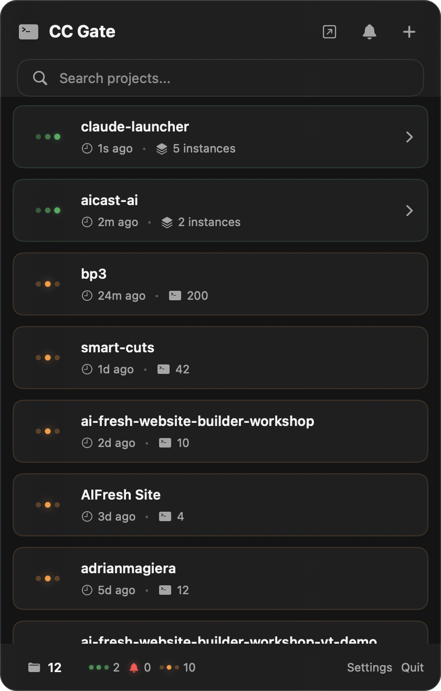
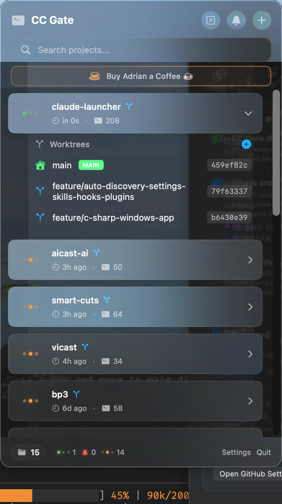

Projects & Status
When you open CC Gate, you see a list of all your projects. Here's what everything means.

How projects appear automatically
CC Gate keeps track of every folder where you've ever run Claude Code. As soon as you use Claude in a new folder, that folder shows up in CC Gate automatically — no setup needed, no adding projects manually.
The list refreshes every few seconds in the background, so new projects appear quickly and status dots stay current. You can adjust how often CC Gate checks for updates in Settings if you want to save battery.
Status dots — what the colors mean
Each project has a small colored dot on the left. It tells you at a glance what Claude is doing right now in that project.
Green (pulsing) — Claude is working
The dot pulses gently to show activity. You'll see this while Claude is thinking, writing code, running searches, or doing anything at all. It might stay green for a while during long tasks like large refactors or test runs — that's normal.
Orange — Claude is waiting for you
This means Claude has stopped and is waiting for something from you. It could be a permission request (like "can I run this command?") or a question Claude is asking you directly. If you have Auto-Accept turned on for that type of action, CC Gate will handle it automatically and the dot will go back to green.
Gray — no active session
The project has history in CC Gate, but no Claude session is open right now. This is the normal state for most projects most of the time. You'll see all your projects go gray when you close Claude Code.
What each project shows
Adding a new project
Click the + button in the top bar of the CC Gate popup. You'll be able to choose a folder — Claude Code will open there and the project will appear in the list right away.

Removing a project
Projects fade out on their own when all their session history is gone. You don't usually need to remove them manually.
If you want to remove a project yourself, right-click on it in the list and choose Remove if the option is available. You can also remove a project's history through Claude Code itself.
Searching projects
If you have a lot of projects, use the search bar at the top of the CC Gate popup to filter by name. Just start typing and the list narrows down instantly.
Refresh rate
CC Gate checks for changes every 15 seconds by default. That's a good balance between staying up-to-date and not draining your battery. You can change it in Settings under the General tab.
| Interval | Battery impact | Best for |
|---|---|---|
| 5 seconds | Higher | When you're actively watching Claude and want instant updates |
| 15 seconds (default) | Balanced | Most people, most of the time |
| 30 seconds | Lower | Laptop on battery, or if you don't need to watch status closely |
| 60 seconds | Minimal | Running CC Gate overnight or leaving it in the background all day |